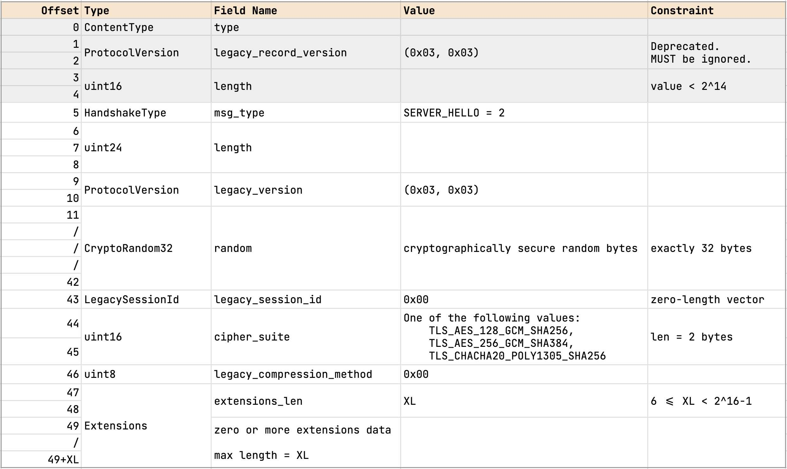

A TLS flight consists of one or more messages sent in a sequence without waiting for response from the receiving endpoint. In a typical session, for example, we can relate messages and flights so:
Flight Message Sender
-----------------------------------------
1 Client Hello Client
2 Server Hello Server
3 Change Cipher Spec Server
4 Encrypted Extensions Server
Certificate
Certificate Verify
Server Finished
5 Client Finished Client
A TLS server normally sends Encrypted Extensions,
Certificate, Certificate Verify, and
Server Finished messages in one flight.
Most servers encrypt individual plaintext messages and send each ciphertext in turn. The sequence of these ciphertext records represents a flight. A few servers, on the contrary, encrypt the entire sequence of plaintext messages into one ciphertext block, and send the ciphertext in one flight. In our tests, we have found “x.com:443” and “www.google.com:443” employ the latter method for .
Virtually every online financial transaction is protected by Transport Layer Security (TLS). Open Banking standards across the globe make TLS version 1.2 or above mandatory for participating entities. TLS is undoubtedly one of the most widely deployed internet security protocol. More recent messaging protocol, MLS (RFC 9420, section-16.1), recommends all MLS messages to be transmitted over TLS 1.3.
Authenticated Encryption with Associated Data (AEAD) [Rog02] has emerged as being the right cryptographic tool for building secure channels. AEAD provides both confidentiality and integrity guarantees for data.
Requirements on AEAD Algorithm Specifications
An Authenticated Encryption algorithm MAY incorporate internal state information that is maintained between invocations of the encrypt operation, e.g., to allow for the construction of distinct values that are used as internal nonces by the algorithm. An AEAD algorithm of this sort is called stateful. This method could be used by an algorithm to provide good security even when the application inputs zero-length nonces.
In Data Is a Stream: Security of Stream-Based Channels, Marc Fischlin et.al., note that while AEAD provides both confidentiality and integrity guarantees for data, on its own, AEAD does not constitute a secure channel. For example, in most practical situations, a secure channel should provide more than simple encryption of messages, but also guarantee detection of (and possibly recovery from) out-of-order delivery and replays of messages.
In part 1 we will consider the implementation of a TLS 1.3 client
program. We call this version of the client program tlsc. In
TLS 1.3 parlance, tlsc implements 1-RTT handshake using ECDHE
key exchange mode without client authentication. This characterization
gives a specific structure to the interactions between tlsc and
a TLS 1.3 compliant server. To see the shape of the interaction, refer
to Figure 1 on page 11 of RFC 8446. We will also use the state machines
A.1. Client (page 120) and A.2. Server (page
121) in Appendix A.
Client Server
<Key Exchange>
ClientHello
+ key_share
+ signature_algorithms
-------->
<Key Exchange>
ServerHello
+ key_share
<Server Params>
{EncryptedExtensions}
<Auth>
{Certificate}
{CertificateVerify}
{Finished}
<--------
<Auth>
{Finished}
<App>
[Application Data] <-------> [Application Data]Figure 1 - Shape of 1-RTT Handshake without Client Authentication.
While reading the diagram imagine that time progresses vertically downward and interaction flows in the direction of arrows.
In presenting the diagram above, we have reused the notational convention from RFC 8446 with one augmentation.
+ indicates important extensions sent in the
message.{} shows messages protected using keys derived from a
[sender]_handshake_traffic_secret.[] indicates messages protected using keys derived from
[sender]_application_traffic_secrete_N.<> names a phase or a sub-protocol. This is our
own notation; this is not from RFC 8446.Figure 1 shown above is a simplified version of Figure 1 from the RFC. We leave out pre-shared key (PSK) mode, and authentication messages, Certificate and CertificateVerify, on the client side.
In this document (DICP - Part 1), we will study the
technical aspects of implementing the interactions shown in Figure 1. We
will delve into the details of various cryptographic primitives used in
each step of the interaction. We will try to reason why TLS 1.3 chooses
to use cryptographic constructions in the fashion it does. We will also
try to clarify and elaborate aspects where the text in the RFC is either
cryptic or is not too helpful.
The handshake (sub)protocol is the most important part of TLS. Undoubtedly, the designers spent significant effort in improving its efficiency compared to TLS 1.2. Most of the security guarantees of TLS is deined by the handshake protocol. Section 4 of RFC 8446 (about 54 pages of text) is entirely dedicated for describing the messages and interactions constituting handshake protocol. Even the appendices in the RFC discuss, at length, the security aspects of the handshake protocol.
Within the handshake protocol, Key Exchange is the first phase. In Figure 1 above, this includes two messages:
At the end of key exchange, the client and server establish a set of shared secrets used for encrypting (protecting) messages that follow. In addition, the client and server agree upon the cryptographic algorithms (aka ciphersuite) which will be in force for the rest of the session.
Client sends ClintHello to the server:
\[ {\begin{array}{llll} \llbracket & & & \\ & server\_name & {\larr} & {\rm\normalsize{SERVER\_NAME}} \\ & {{handshake\_context}} & {\larr} & client\_hello\_msg\\ & {{cipher\_suite\_ids}} & {\larr} & [{cid_{1}, ..., cid_{j}}] \ \text{where} \ 1 \le j \le 5\\ & {{key\_shares}} & {\larr} & [(ecg_1, (sk^c_1, pk^c_1)), \\ &&& \ \, ..., \\ &&& \ \, (ecg_m, (sk^c_m, pk^c_m))] \ \text{where} \ 1 \le m\\ & {{signature\_schemes}} & {\larr} & {<}s_1, ..., s_n{>} {\hspace*{60mm}} \\ \rrbracket & & & \\ \end{array}} \]
ClientHello
Server state after deriving its handshake secrets: \[ {\begin{array}{llll} \llbracket & & & \\ & {handshake\_context} & {\larr} & {\rm\normalsize{Concat}}(client\_hello\_msg, \\ &&& \hspace*{12mm} server\_hello\_msg)\\ & {cipher\_suite\_id} & {\larr} & cid \ \rm{where} \ cid \in \{{\rm\normalsize{CH}}.cid_{1}, ..., {\rm\normalsize{CH}}.cid_{j}\}\\ & {cipher\_suite} & {\larr} & {\rm\normalsize{CipherSuite}}(cid) \ \text{where} \ cid \in \{{\rm\normalsize{CH}}.cid_{1}, ..., {\rm\normalsize{CH}}.cid_{j}\}\\ & {traffic\_secrets} & {\larr} & (hs, hts^s, hts^c) \\ &&& {\rm{where}} \ hs \ \ \, = {\rm\normalsize{HandshakeSecret(...)}} \\ &&& \hspace*{9mm}\ hts^s = {\rm\normalsize{ServerHandshakeTrafficSecret(...)}} \\ &&& \hspace*{9mm}\ hts^c = {\rm\normalsize{ClientHandshakeTrafficSecret(...)}} \\ & {server\_cert} & {\larr} & {\rm\normalsize{X509Cert}}(n, \ s) \\ &&& \ \ \rm{where} \ n = {\rm\normalsize{CH}}.server\_name, \\ &&& \ \ \hspace*{9mm} \ s \in \{{\rm\normalsize{CH}}.s_{1}, ..., {\rm\normalsize{CH}}.s_{n}\}\\ \rrbracket & & & \\ \end{array}} \]
ServerHello 
Client receives the server hello message, computes handshake secrets, and prepares for the traffic authentication sub-protocol. This is the client state at the beginning of the authentication phase: \[ {\begin{array}{llll} \llbracket & & & \\ & {{handshake\_context}} & {\larr} & {\rm\normalsize{Concat}}(client\_hello\_msg, \\ &&& \hspace*{12mm} server\_hello\_msg) \\ & {{cipher\_suite\_id}} & {\larr} & {\rm\normalsize{SH}}.cid, \\ & {{cipher\_suite}} & {\larr} & {\rm\normalsize{CipherSuite}}({\rm\normalsize{SH}}.cid) \\ & {{traffic\_secrets}} & {\larr} & (hs, hts^s, hts^c) {\hspace*{60mm}} \\ &&& {\rm{where}} \ hs \ \ \, = {\rm\normalsize{HandshakeSecret(...)}} \\ &&& \hspace*{9mm}\ hts^s = {\rm\normalsize{ServerHandshakeTrafficSecret(...)}} \\ &&& \hspace*{9mm}\ hts^c = {\rm\normalsize{ClientHandshakeTrafficSecret(...)}} \\ \rrbracket & & & \\ \end{array}} \]
\[ {\begin{array}{l} (h^c, \, \{\tau_1,..,\tau_j\}, \, \{\kappa^c_{g_1},.., \kappa^c_{g_n}\}) {\hspace*{2.6in}} \bot \\ \\ {\hspace*{2.5cm}}{\large{\xrightarrow {client\_hello(sn, \, \{ g_1,..,g_m \}, \, \{s_1,..,s_i\}, \, \{\tau_1,..,\tau_j\}, \, \{k^c_{g_1},.., k^c_{g_m}\}, \, r_c)}}} \\ \end{array}} \]
Server processes ClientHello, checks if it can support
at least one DH group, validates the signature schemes indicated by the
client, and the ciphersuite indicated in ClientHello. If it
is satisfied, server selects the certificate, \(\phi_s\), for the server name \(sn\) indicated in
ClientHello.
\[ {\phi_s = sever\_cert(sn)} \]
The server also chooses a ciphersuite, \(\tau_i\):
\[ {\tau \in \{ \tau_1,..,\tau_j\}} \]
Next, server selects an elliptic curve group from the groups which client supports: \(g_i \in \{ g_1,..,g_m \}\). It produces a fresh Diffie-Hellman key pair \((\kappa^s_{g_i}, k^s_{g_i})\) where \(\kappa^s_{g_i}\) is its private key (a secret), and \(k^s_{g_i}\) is the public key. The secret is used to calculate DH shared secret, and the latter is shared with the client.
Server performs its part of ECDHE using client’s key share and its own private key, producing DH shared secret:
\[ \rho = ecdhe(\kappa^s_{g_i}, \, k^c_{g_i}) \]
Using only \(\rho\) as the key material, server derives TLS handshake traffic secrets:
\[ \chi = derive\_handshake\_traffic\_secrets(\rho) \]
Now that the server has worked out cryptographic context, it prepares
it’s response, the ServerHello message. We name the
plaintext bytes constituting this message as \(h_s\) for short. It then creates an
environment initialized with these components:
\[ {E^{auth}_{s} = (h^c\cdot h^s, \, \chi, \, \phi_s, \, \tau)} \]
Finally, it outputs the message. Note that the ephemeral public key
component \(k^s_{g_i}\) is part of the
ServerHello message.
\[ {\begin{array}{l} (h^c, \, \{\kappa^c_{g_1},.., \kappa^c_{g_n}\}, \, \{\tau_1,..,\tau_j\}) \hspace*{2.5in} (h^c\cdot h^s, \, \chi, \, \phi_s, \, \tau) \\ \\ {\hspace*{5cm}}{\large{\xleftarrow{server\_hello(g_i, \, \tau, \, k^s_{g_i}, \, r_s) \\}}} \end{array}} \]
Client processesServerHello, checks that the group \(g_i\) selected by the server is one of the
groups it supports: \(g_i \in \{ g_1,..,g_m
\}\). Next, it runs ECDHE using server’s ephemeral public key,
\(k^s_{g_i}\) and its own session
private key \(\kappa^c_{g_i}\),
producing the exact same DH shared secret:
\[ { \rho = ecdhe(\kappa^c_{g_i}, \, k^s_{g_i}) } \]
Using only \(\rho\) as the key material, client derives TLS handshake traffic secrets:
\[ {\chi = derive\_handshake\_traffic\_secrets(\rho)} \]
Thanks to some neat elliptic-curve math, the client ends up with the
exact same \(\rho\) and \(\chi\) as the server. The \(\chi\) component is what the TLS spec calls
server_handshake_traffic_secret.
By the end of this message exchange, the client is equipped to exchange encrypted and authenticated messages with the server. Therefore, the client initializes its session with the message context, session ciphersuite, and the traffic secrets:
\[ { E^{auth}_c = (h^c\cdot h^s, \, \tau, \, \chi) } \]
Note that the message context is merely a concatenation of plaintext slices of ClientHello and ServerHello. The plaintext slices start from the sixth byte (offset 5 in the zero-based index). The first five bytes of ClientHello and ServerHello are data layer record headers. This is clearly shown in the two diagrams below. Record layer headers have a gray background while the plaintext fragments are shown in the clear.
As a part of handshake, the server is required to send the EncryptedExtensions message immediately after the ServerHello message (section 4.3.1, page 60 of TLS). This is the first encrypted message in the traffic. The server encrypted using the key tucked in the \(\Chi\) component of the session
In 1-RTT handshake, the server sends out the following three
messages: Certificate, Certificate Verify, and
Finished. These three messages constitute server
authentication, certificate signing key confirmation, and ensuring
handshake integrity, respectively. The client has to processes
these messages in the same sequence. Each message carries incremental
information necessary to verify the authenticity as well as the
integrity of the previous messages. We can summarize the information
contained in each of these messages, and the actions client is required
to carry out while processing these messages.
First, the Certificate message contains server’s
(non-empty) certificate chain. It is mandatory for servers to provide a
list of X.509 certificates. Recall that the server_name
extension in ClientHello identifies a server endpoint. The
first certificate in the chain represents the endpoint identified by
server_name. (Recall also that sn argument in
ClientHello stands for
server_name). The first certificate in the list, therefore,
contains a public key to be used to verify the contents of the
immediately following CertificateVerify message.
Second, the Certificate Verify
Section 5.2, page 89 of RFC 8446 presents two type definitions for protected data records. We reproduce the types here with minor notational embellishments. For example, we indicate position of each field relative to the beginning of the data structure. This comes handy while writing constraints on field-lengths. They are also useful in relating the sizes of the components of plaintext and ciphertext. We can easily turn such specifications into assertions in the Rust program.
struct {
0:1 - ContentType opaque_type = application_data;
/* = 23 */
1:2 - ProtocolVersion legacy_record_version = TLS_V1.2;
/* = 0x0303 */
3:2 - uint16 length;
/* where 21 < val < 2^14+256; val aka CL */
5:CL - opaque aead_ct_record[TLSCipherText.length];
/* opaque[CL]*/
} TLSCiphertext; /* thus, sizeof(TLSCiphertext) = 5+CL */To get a better picture, we will turn the above data definitions into a horizontal layout, as a sequence of bytes, showing byte offsets of different fields.
This structure holds the plaintext which is to be protected. The plaintext may be a handshake message fragment or raw bytes of the application data. It holds handshake message in the authentication phase, and subsequently, post-handshake, it holds application data exchanged by the peers.
struct {
0:PL - opaque content[TLSPlaintext.length];
/* opaque[PL] */
PL:1 - ContentType type;
/* = 22 if handshake; = 23 if application_data */
PL+1:ZL - uint8 zeroes[ZL];
/* ZL == CL-(PL+1)-16 */
} TLSInnerPlaintext;
/* thus, sizeof(TLSInnerPlaintext) = IPL = PL+1+ZL = CL-16 */In the following discussion we will use PL to mean the size of plaintext, in bytes. For brevity, we use CT for ContentType.
In TLSInnerPlaintext, the first field named content
holds the plaintext bytes. The size of this array is PL (bytes). TLS
does not allow zero length content field for handshake and
alert messages.
The next field type holds the content type of the
plaintext record. It denotes the ContentType of the message
in content field. CT will have different values depending
on the message or data being protected. Thus,
CT = 21 - an alert message,
CT = 22 - one of the following handshake messages
- alert
- new_session_ticket
- encrypted_extensions
- certificate
- certificate_verify
- finished
and
CT = 23 - application specific data
(i.e, HTTP request/response payload)TLS 1.3 allows encrypted records to be padded with zeroes as long as the total size of TLSInnerPlaintext record doesn’t exceed 2^14 + 1 bytes. When the sender inflates the size of an encrypted record, observers cannot tell the actual size of the plaintext. It is obvious padding increases record size, and may adversely impact overall performance.
Section 5.4 of RFC 8446 describes many aspects of record padding. In our tests, we will see that most HTTP servers do not pad either handshake records or application data records.
The following diagram shows the structure of TLSInnerPlaintext without padding zeroes, which is the most common case.
0 1 2 3 PL PL+1
+----+----+----+----/-*--*-/-+----+----+----+----+
| Handshake Message or Application Data | CT |
+----+----+----+----/-*--*-/-+----+----+----+----+
<------------------- Plaintext ----------------->|
(PL bytes)
|<---------------------------------------------->|
TlsInnerPlaintext
(PL+1 bytes)
TlsInnerPlaintext without padding
TlsInnerPlaintext with arbitrary zero padding at the end of the data block may be visualized thus:
0 1 2 3 PL PL+1 PL+1+ZL
+----+----+----+---*---*---+----+----+----+----+--*-----*----*---+
| Handshake Message or Application Data | CT | Padding zeroes |
+----+----+----+---*---*---+----+----+----+----+-*------*----*---+
<--------------- Plaintext -------------->| |<- Optional Pad ->
(PL bytes) (ZL bytes)
|<-------------------------------------------------------------->|
TlsInnerPlaintext
TlsInnerPlaintext with arbitrary-sized zero padding
TLS 1.3 employs only Authenticated Encryption with Associated Data (AEAD) ciphers. AEADs simultaneously protect confidentiality of the plaintext, and the authenticity and integrity of ciphertext. In other words, with the AEADs supported by TLS 1.3, one will not be able to learn about the plaintext or the encryption key even if one has access to all ciphertexts exchanged by the peers. At the same time, AEAD ciphers will be able to detect if either ciphertext or the MAC has been tampered or altered in transit. Practical AEADs combine a secure cipher with a strong MAC. Their composition has been proved to provide highest levels of security.
TLS 1.3 defines 5 AEAD algorithms for record protection:
AES_128_GCM - MUST implement this AEAD algorithm.
AES_256_GCM - SHOULD implement this AEAD algorithm.
CHACHA20_POLY1305 - SHOULD implement this AEAD algorithm.
AES_128_CCM
AES_256_CCMIn tlsc, we support the first three algorithms from this
list which includes the mandatory AES_128_GCM.
0 1 2 3 4 5 6 5+IPL 5+CL
+----+----+----+----+----+----+----+--*--*----+----|---*--*-+----+
| 23 | 0x0303 | CL | Encrypted Data | MAC |
+----+----+----+----+----+----+----+--*--*----+----+---*--*-+----+
<--- Additional Data --->|<-- TlsInnerPlainText -->|<- AEAD Tag ->
|<---------------------->|<------------------------------------->|
AAD AEAD output
(5 bytes) (CL bytes)
plaintext ciphertext
The server processes the ClientHello message and determines the
ciphersuite for the session. The server responds with the ServerHello
message which includes its key share, which is server’s
ephemeral Diffie-Hellman share. In tlsc, ClientHello
contains two shares, each in an EC group: X25519 and secp256r1. These
are the only two supported_groups in tlsc.

The Transport Layer Security (TLS) Protocol Version 1.3. https://www.rfc-editor.org/rfc/rfc8446.html#section-4.3.1